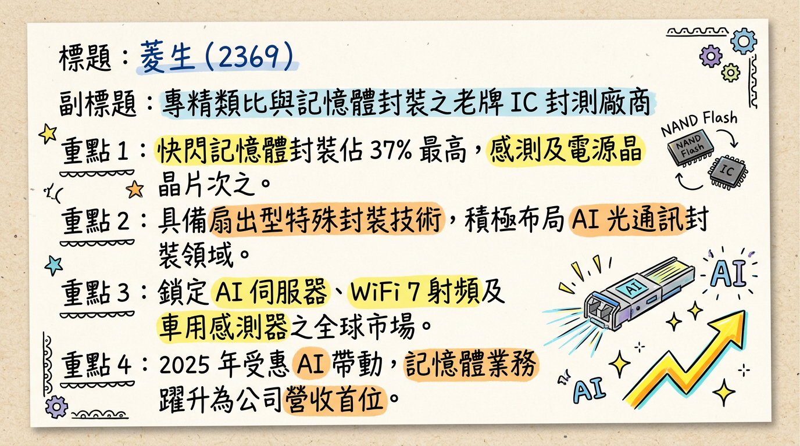
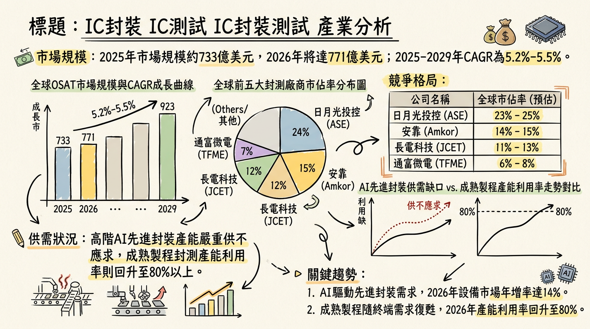
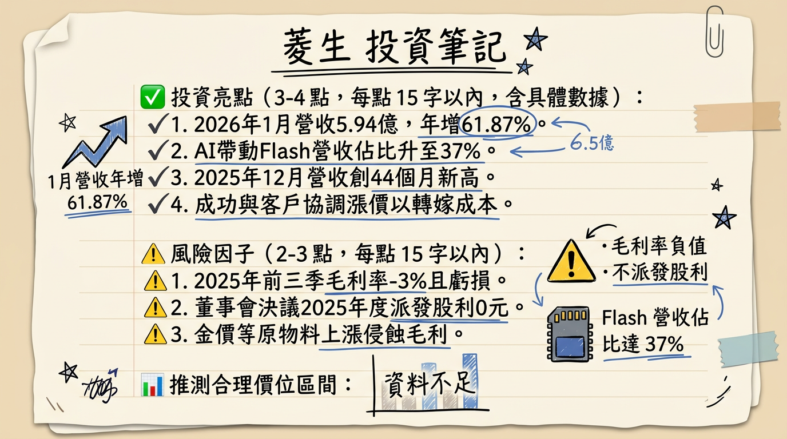

2369 菱生 深度研究報告
一句話摘要
「由虧轉盈的轉骨期」：菱生受惠 AI 記憶體封測需求外溢與 WiFi 7 世代交替，2026 年初營收強彈 61%，正處於產品組合優化與報價調漲後的獲利轉折點。
公司概覽
菱生精密（Lingsen Precision）為台灣老牌利基型封測廠（OSAT），專精於類比 IC、感測器及記憶體封裝。2025 年起，公司策略性降低低毛利消費性電子佔比，轉向 AI 相關 Flash 與高速傳輸領域。
業務與產品線營收結構 (2025/12 法說會數據)
| 產品線 | 營收佔比 | 應用領域 |
|---|
| 快閃記憶體 (Flash) | 37% | NOR/NAND Flash, AI 伺服器啟動碟 |
| 感測元件 (Sensor IC) | 32% | MEMS, 車用感測器, ADAS |
| 電源管理 (Power IC) | 20% | PMIC, 伺服器電源管理 |
| 射頻元件 (RF-IC) | 5% | WiFi 7 相關射頻模組 |
| 微控制器 (MCU) 及其他 | 6% | 工控與消費性電子 |
核心競爭優勢
記憶體封測利基地位： 菱生為少數能提供穩定 NOR/NAND Flash 封裝之二線廠，在 AI 伺服器與邊緣運算裝置對啟動碟需求爆發時，具備承接大廠（如力成）外溢訂單的彈性。
WiFi 7 先行佈局： 已備妥射頻元件封裝產能，迎接 2026 年 WiFi 7 世代交替之射頻前端（RFFE）封裝商機。
轉型先進封裝： 積極投入扇出型（Fan-out）特殊製程與 AI 光通訊傳輸元件封裝，試圖擺脫傳統打線封裝的價格戰。
財務分析
月營收趨勢表
| 月份 | 營收 (億台幣) | 月增率 (MoM) | 年增率 (YoY) | 備註 |
|---|
| 2026/01 | 5.94 | +3.39% | +61.87% | 創 46 個月新高 |
| 2025/12 | 5.75 | +15.64% | +36.77% | 創 44 個月新高 |
| 2025/11 | 4.97 | +5.56% | +15.36% | 需求回溫 |
| 2025/10 | 4.71 | -1.32% | +10.83% | 庫存調整末端 |
| 2025/09 | 4.77 | -1.19% | +8.43% | 低基期強彈 |
| 2025/08 | 4.83 | +1.01% | +3.82% | 穩定起跑 |
季度與年度趨勢
- 2025 全年營收： 55.58 億元 (YoY +3.45%)。
- EPS 表現： 2024 年為 -0.45 元，2025 年為 -1.05 元（受原物料與虧損影響）。
- 2026 展望： 市場預估 2026 Q1 EPS 可望縮減至 -0.02 元，全年挑戰轉正，預估區間為 0.05 至 0.15 元。
法說會重點 (2025/12/03)
- Guidance 展望： 管理層明確指出 2026 年營收目標為雙位數成長（>10%），重點在於改善毛利。
- 報價調整： 已成功與部分客戶達成美元報價調漲協議，以轉嫁金價上漲成本，預計 2026 Q1 起利潤率將回升。
- 稼動率： 記憶體封裝線接近滿載，傳統打線約 65-70%，預期 2026 上半年整體稼動率可望站穩 80%。
- 技術方向： 確認投入 50G VCSEL 與 CW Laser 等高速光元件封裝，瞄準 AI 資料中心市場。
券商觀點分析
| 券商名稱 | 目標價 | 評等 | 日期 | 核心邏輯 |
|---|
| Factset 分析師共識 | 32.50 | 持有/偏多 | 2026/02/10 | 預期 2026 轉虧為盈，受惠記憶體超級週期 |
| 中信證券 (CTBC) | 30.00 | 中立轉觀察 | 2025/12/04 | 觀察報價轉嫁成效，短期毛利承壓 |
| 群益投顧 | 24.50 | 中立 | 2025/08/14 | (過時資料) 當時尚未反映 AI 需求爆發 |
財報深度分析
利潤率趨勢表
| 指標 | 2024 Q4 | 2025 Q1 | 2025 Q2 | 2025 Q3 | 趨勢評論 |
|---|
| 毛利率 (%) | -2.50% | -3.10% | -2.01% | -4.02% | 受金價上漲打壓 |
| 營業利益率 (%) | -8.80% | -9.20% | -8.15% | -10.36% | 管理成本穩定但毛利不足 |
| 稅後淨利率 (%) | -9.40% | -9.90% | -7.50% | -8.85% | 處於營運谷底 |
- 存貨分析： 2025 Q3 存貨週轉天數僅 18.66 天，顯著優於同業平均，顯示公司無庫存積壓壓力，營運轉向接單生產。
- 資本支出： 2025 年累計約 3.2 億元，2026 年預計維持穩定，專注於 WiFi 7 產能擴充。
股權異動與資本結構
- 股利政策： 2026/02/25 董事會決議 2025 年度不配發股利。
- 籌資工具： 目前無可轉換公司債（CB）餘額，負債比率 32%，財務結構穩健。
- 股權集中度： 員工持股信託 5.63%、大裕投資 4.91%。近期外資（2026/02 最後一週）買超 3,087 張，持股比率升至 14.36%。
產業分析
全球封測 (OSAT) 競爭格局 (2025 Est.)
| 排名 | 公司 | 市佔率 | 核心領域 | 菱生定位 |
|---|
| 1 | 日月光 (ASE) | ~45% | 先進封裝 (CoWoS) | 一線龍頭，技術領先 |
| 5 | 力成 (PTI) | ~6% | 記憶體封測龍頭 | 菱生主要的競爭/外溢對象 |
| -- | 菱生 (2369) | 利基型 | Sensor / Flash | 專注特定類比/記憶體封測 |
- 產業趨勢： 2026 年全球封測市場預估達 771 億美元。高階 AI 封裝供不應求，帶動成熟封裝（如菱生）稼動率回升。
近期催化劑
1. 2026 年 1 月營收年增
61.87%，定調全年成長基調。
2. WiFi 7 滲透率預計在 2026 年突破 25%，帶動射頻封裝需求。
3. 與客戶協調調漲報價之成效預計於 2026 Q1 財報顯現。
1. 2025 年不發放股利，短期可能影響存股族持股信心。
2. 國際金價若持續維持高位，將抵銷漲價效益。
⭐ 成長動能時間軸
- 2025 Q4 - 2026 Q1： 滾動式擴充記憶體封裝機台，產能提升約 5-10%，應對 AI 需求。
- 2026 Q1 (當前)： 報價調整正式生效，觀察毛利率是否止跌回升。
- 2026 Q2 (預期)： 扇出型封裝（Fan-out） 正式量產，切入車用雷達市場。
- 2026 全年： AI 光通訊傳輸元件（CPO 相關）研發成果轉化為營收，資料中心業務具翻倍潛力。
2026 展望
- 成長動能： AI 伺服器對高性能 NOR Flash 的需求及 WiFi 7 的硬體換機潮，是菱生 2026 年兩大核心引擎。
- 潛在風險： 貴金屬成本波動、二線廠價格競爭、地緣政治對消費性電子的衝擊。
投資結論
營收先行： 1 月營收已展現強大爆發力（YoY +61%），營運最壞時期已過。
虧轉盈期待： 2026 年關鍵在於「報價調漲」與「產品組合改善」（Flash 佔比提升），法人預期全年力爭轉盈。
技術題材： 具備 WiFi 7 與光通訊（矽光子前哨）題材，股價具備活潑特質。
操作建議： 股價支撐參考 25.5-27 元，上檔目標區間建議參考券商共識 30.0-35.0 元。
本報告由 AI 自動產生，資料來源為公開網路資訊，僅供參考，不構成投資建議。產生時間：2026-03-01 02:11
📊 資訊卡


